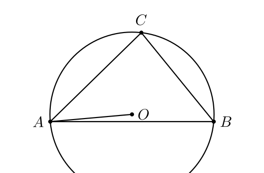

§2 · Установка и первый запуск
AnimaGeo — обычный Python-пакет. Поставить можно из pypi
(pip install animageo) или из репозитория, если нужны
последние фиксы. Вместе с ней идут manim и pycairo
как транзитивные зависимости; для TeX-подписей отдельно нужен системный
LaTeX.
Системные требования
| Компонент | Версия | Зачем |
|---|---|---|
python | ≥ 3.9 (тестируется на 3.13 и 3.14) | язык и окружение |
manim | ≥ 0.20.1 | графическое ядро (Mobject, Scene) |
numpy | ≥ 1.26 | геометрия, адаптивный sampling |
pycairo | ≥ 1.0 | экспорт в SVG (минуя manim-рендерер) |
lark | ≥ 1.1 | парсер GGB-выражений |
| LaTeX | любая (basictex, texlive-latex-base, MikTeX) | TeX-подписи: $\alpha$, \triangle ABC |
sympy и scipy нужны только если вы используете
Function/ImplicitCurve и хотите аналитические пересечения
кривых — обычно идут вместе с manim.
brew install --cask basictex (~100 MB). Для Linux —
apt install texlive-latex-base texlive-fonts-recommended.
Установка
Вариант 1 — pip (release)
python3.13 -m pip install animageoЭто стянет manim и pycairo как зависимости. На macOS
pycairo сначала хочет brew install cairo pkg-config, на
Linux — apt install libcairo2-dev pkg-config.
Вариант 2 — из репозитория (dev)
git clone https://github.com/ivaleo/animageo.git
cd animageo
python3.13 -m pip install -e '.[dev]'-e ставит в editable-режиме: правки в animageo/*.py
видны сразу, без переустановки. Так же разрабатывается сам этот гайд.
Зависимости render-сервера для этого гайда
python3.13 -m pip install fastapi uvicorn pydanticНужны только если вы планируете интерактивные примеры — для обычного использования AnimaGeo в своих скриптах не требуются.
Интерактивный веб-экспорт (опционально, JS)
Для встраивания подвижных чертежей в web (см. §10)
нужен только JSXGraph на стороне браузера —
из npm (npm i jsxgraph) или с CDN. Python-сторона
(exportJSXGraph) дополнительных зависимостей не требует.
Проверка установки
Самый дешёвый способ убедиться, что всё работает — импортировать
AnimaGeoScene:
$ python3.13 -c "from animageo.animageo import AnimaGeoScene; print('OK')"
Manim Community v0.20.1
OKБаннер Manim Community печатается самим manim
при первом импорте. Если вместо OK вы получили
ModuleNotFoundError — проверьте, что pip install
прошёл в то же окружение, где запускается python3.13.
which python3.13 и python3.13 -m pip show manim.
Если python3 указывает на другой Python без manim,
используйте явный python3.13.
CLI: .ggb → SVG одной командой
Для простого конверта GeoGebra-файла не обязательно писать Scene-класс:
$ animageo problem.ggb -o problem.svg -s my_style.json -px 800 600CLI создаёт временный driver-script, запускает manim и вызывает
loadGGB(...) + exportSVG(...). Размеры -px
принимают числа или auto.
Первый скрипт
Минимальная программа на AnimaGeo — это Scene-подкласс с методом
construct(). Ниже — треугольник с описанной окружностью и
экспортом в SVG.
A = Point(-3.5, -1.5)
B = Point(3.5, -1.5)
C = Point(0.4, 2.3)
p, a, b, c = Polygon(A, B, C)
# описанная окружность:
O = Center(Circle(A, B, C))
r = Segment(O, A)
k = Circle(O, A)
style(A, B, C, O, label_visible=True)
Тело над чертой — это DSL. В скрипте его отдают методу
putCode(...), а сам скрипт — обёртка вокруг AnimaGeoScene:
from animageo.animageo import AnimaGeoScene
class HelloScene(AnimaGeoScene):
def construct(self):
self.applyStyle(style_file='guide_style.json', px_size=[520, 340])
self.putCode("""
A = Point(-3.5, -1.5)
B = Point(3.5, -1.5)
C = Point(0.4, 2.3)
p, a, b, c = Polygon(A, B, C)
O = Center(Circle(A, B, C))
k = Circle(O, A)
""")
for n in ['A', 'B', 'C', 'O']:
self.element(n).style['label_visible'] = True
self.addAllGeometry(show=True)
self.updateAllGeometry()
self.autoPlaceLabels()
self.exportSVG('hello.svg')
if __name__ == '__main__':
HelloScene().construct()Запуск:
$ python3.13 hello.py
$ open hello.svg # macOS
$ xdg-open hello.svg # LinuxАнатомия Scene
Любой скрипт AnimaGeo повторяет шесть шагов. Запомнить их стоит один раз — дальше в гайде мы их уже не будем повторять.
| # | Вызов | Что происходит |
|---|---|---|
| 1 | HelloScene() | создаётся manim.Scene; AnimaGeoScene.__init__ готовит пустой GeoStyle и пустой Construction |
| 2 | self.applyStyle(...) | грузится JSON-стиль, распаковывается в self.style; px_size задаёт холст в пикселях |
| 3 | self.putCode(...) | exec-движок (parsers/dsl/) превращает Python-DSL в команды и наполняет Construction |
| 4 | self.element(n).style[...] | (опционально) per-element overrides поверх применённого стиля |
| 5 | self.addAllGeometry(show=True)self.updateAllGeometry() | строится mobject-граф; вычисляются актуальные координаты всех зависимых объектов |
| 6 | self.exportSVG(path) | Cairo-контекст → SVG-файл. Никакого видео-рендера, ~10–150 мс. |
manim-CLI, вместо exportSVG работают
self.play(...)-ы и self.wait(...). Подробно в §9.
Что делает putCode vs «прямой» API
putCode("""A = Point(0, 0)\nB = Point(3, 0)\n...""") —
это сахар, эквивалентный набору прямых вызовов через
self.geo. Оба пути работают, но предпочтительнее первый:
тот же текст можно вставить в .ggb-файл, в интерактивный
пример, прислать другому человеку — это один и тот же DSL.
Прямой API (для сравнения)
self.geo.Point('A', [-3, 0])
self.geo.Point('B', [3, 0])
self.geo.Point('C', [0, 2])
self.geo.Polygon('p', ['A', 'B', 'C'])
# полный список команд — animageo/geo/lib_commands.py
Render-сервер для этого гайда
Чтобы заработали кнопки Edit / Run в интерактивных примерах, нужен локальный сервер:
cd /path/to/animageo
PYTHONPATH=. python3.13 docs/guide/server/serve.pyСервер слушает http://127.0.0.1:8765. Откройте гайд по
этому URL, и кнопка Edit станет рабочей. Если сервер
не запущен, гайд всё равно читается — иллюстрации показываются как
статические SVG, просто не получится их перерисовать.
POST /render исполняет произвольный Python через
AnimaGeoScene.putCode(). Сервер жёстко биндится на
127.0.0.1 и никогда не должен смотреть наружу без
дополнительного sandbox'а.
Пробуем интерактив прямо здесь
Если сервер запущен, пример ниже должен отработать: нажмите
Edit, поменяйте, скажем, r = 2 на r = 3.5,
нажмите Run.
O = Point(0, 0)
r = 2
P = Point(r, 0)
c = Circle(O, P)
style(O, P, label_visible=True)Внизу справа в панели иллюстрации появится таймкод рендера
(рендер 30ms · 80ms total) — первый раз медленнее из-за
манименного init и, если подписи TeX — компиляции шрифтов; повторы
попадают в LRU-кэш и отвечают за <2 мс.
Что дальше
- §3 — полный Python-DSL. Что уже работало в примерах выше (
Point,Polygon,Circle,Center) — малая часть. В DSL естьMidpoint,Intersect,OrthogonalLine,LineBisector,Tangent,AngularBisector, и ещё 150+ команд. - §4 — загрузка из
.ggb:loadGGBиImportPolicy. - §5 — стили: всё про JSON-файл, который мы передаём в
applyStyle.